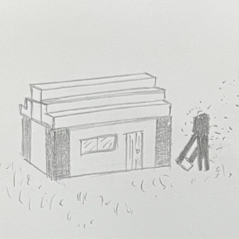
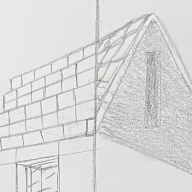
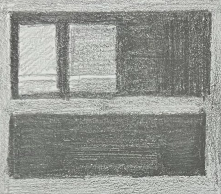

"Steve finalizing a tower in his project, documented by the team from afar"
Minecraft provides the opportunity to recreate one's perspective...
... whether that be by creating builds they previously only imagined, by exploring the world and
understanding the unfamiliar they see, or by experimenting and learning from the things they
believed they knew well moments before.
For us at Minecraft CrossRoads, Minecraft recreated our familiar through the stories of our
friends--whether that be through the occassional talks of new biome features or adventures following
Steve and their many projects. Our world view is constantly evolving, and Minecraft CrossRoads is a
testament of that.
Particularly, we're asking more questions about what our world view could be!
For Example:
- What then makes up a creator's process?
- How do creators go about developing their builds from idea to finished pieces?
- How do they account for errors in planning they may not have thought of?
- How can we learn from them?
Minecraft Crossroads wants to explore those questions...
...and analyze the “Minecraft architect” as we understand it.
In our pages, you'll find our explorations of example builds, analysis of architectural elements
and their Minecraft counterparts, pictoral documentation of our interactions and learnings from our world,
and much more! We also are working on an experimental feature:one where you could play with floorplan ideas at a basic level,
letting you decide in advance how your visions might look without the need to bust out a book and quill.
The ultimate goal of our exploration is sharing our findings with you. We want to get you questioning as we do,
whether that be through questions extending our own or questions exploring topics we have yet to think of. Regardless,
these pages are meant to house a subjective exploration. We hope it makes you feel as welcome as we do.
To Which CrossRoad Will You Travel?
Experiments
Part of being a "Minecraft Architect" is being an architect! Explore the elements we analyzed by crafting your own builds! Use our tool to plan whatever you like and see it in 3D.
Analysis
See how we break down Minecraft builds by element (roofs, windows, etc.) and compare their popular implementations to those in real-life examples.
Reviews
Part of analyzing is critiquing and reviewing the resources around us to clarify our understanding. Check out some of our reviews, narrative and otherwise.